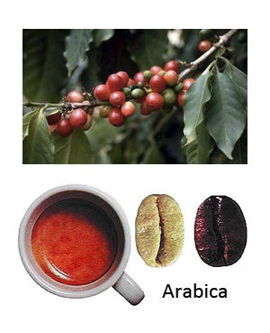
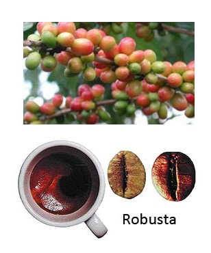

Арабика

Это самый популярный вид кофейного дерва, известный, наверняка, всем, кто хоть раз покупал кофе. Растет арабика преимущественно в азиатском и африканском тропическом климате. Созревает арабика до полугода, а сбор ее чаще всего не машинный, а ручной, потому ценность такого напитка возрастает. Состав зерен арабики отличается в зависимости от зоны произрастания: самое высокое содержание кофеина и зерен, произрастающих в Колумбии. Но если сравнить эту же арабику с, например, робустой, то у второго сорта содержание кофеина куда значительнее. Арабику отличает неповторимый аромат – за это сорт так ценится среди любителей.
Робуста

По употреблению кофе робуста занимает второе место после арабики, потому что уступает ей во вкусовых характеристиках. Натуральные зерна сорта робуста имеют горьковатый очень сильный вкус, поэтому чаще всего этот сорт смешивают с другими видами кофейных зерен. Еще одно важное замечание: сильный терпкий вкус робусты чаще всего «сглаживают» при приготовлении растворимых напитков, собственно, именно поэтому в баночках с растворимым кофе чаще всего мы видим именно робусту. Важно заметить, что горький и грубоватый вкус этого сорта кофе обусловлен большим сорежанием кофеина в зернах – в два раза большим, чем в арабике. Также зерна робусты куда более богаты аминокислотами и хлорогеновыми кислотами.